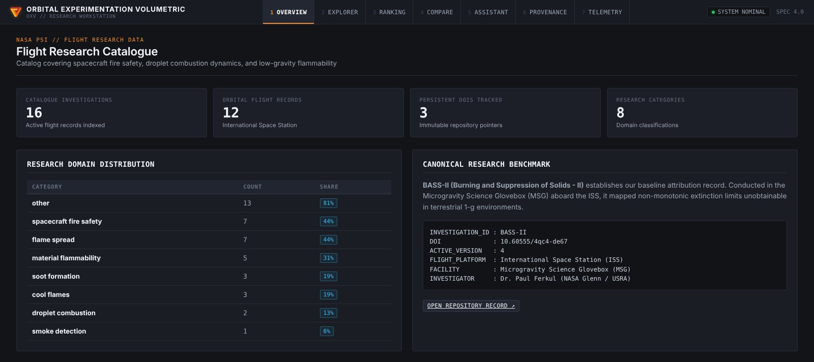
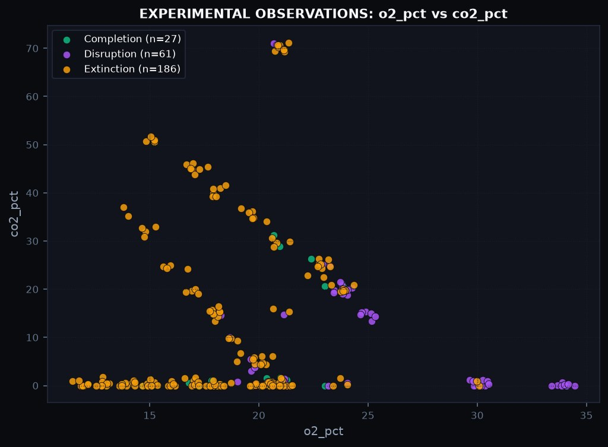
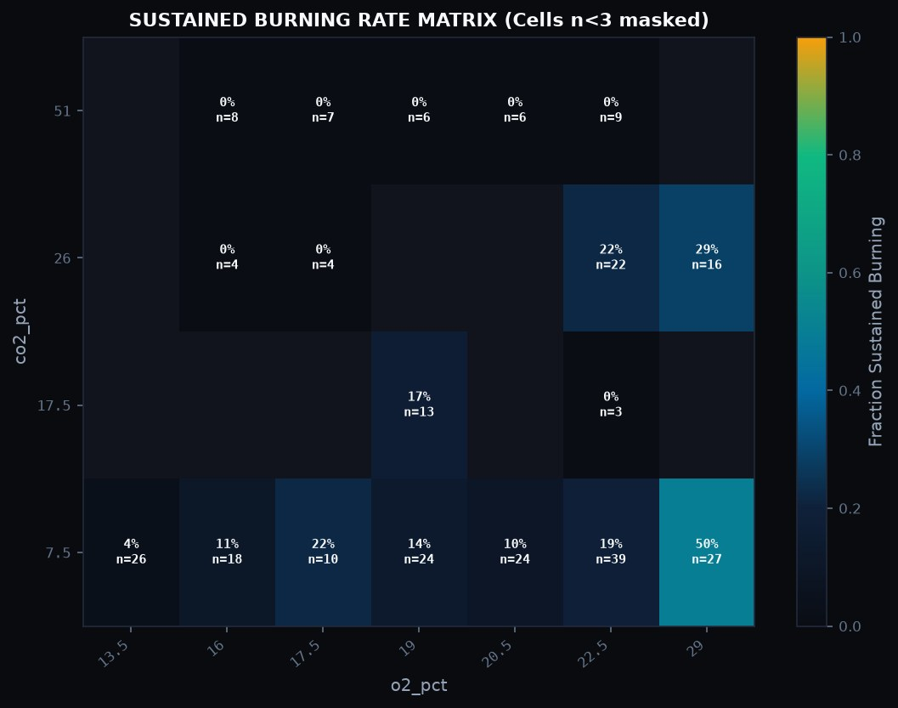

NASA Space Apps Challenge 2026 · Flame in Freefall
Orbital Experimentation Volumetric
A flame you can steer and a research library you can question, built to make fire in microgravity understandable.
no “up” out here, so it burns as a ball
01 · The problem
Without rising hot gas, the flame becomes a slow, dim blue sphere fed only by diffusion.
ISS droplet tests (FLEX) found cool flames: fuel still reacting after the visible flame is gone.
Apollo 1 (1967) killed three astronauts in a pure-oxygen cabin. The Mir fire (1997) burned for about 90 seconds.
NASA ran the experiments · using them is the hard part
PSI records define the same fields inconsistently.
BASS-II has no outcome column, only free-text notes.
BASS-II is on v4, FLEX on v5. Which one was used?
A table doesn’t show what that fire looks like.
02 · Proposed solution
SEE IT
A real-time 3D flame. Change gravity, fuel, oxygen, pressure or wind and watch how the fire responds.
12 presets · 8 fuels · risk index · AI assistant
github.com/closingexe/oxv
Open repo →same NASA data
KNOW IT
A dashboard over 16 NASA investigations: classify, rank, compare and question them, with every answer cited.
7 views · 274 flight runs · DOI provenance
github.com/opening-gem/OXV-Research-Workstation
Open repo →Simulate a scenario, then look up what actually flew.
03 · The simulator
live run · methane at 0 g
live readouts, graphs, a risk index and a local AI assistant read the same run
PRESETS FROM NASA SCENARIOS
Mixing-limited chemistry
Burn rate is capped by fuel and oxygen mixing, so flames get a real length.
Radiative extinction, cool flames
Big droplets radiate heat away, go dark, and keep reacting cold, as FLEX saw.
Choice of diluent
N₂, CO₂ or He change density, heat capacity and radiation.
Validated on trends
12 of 12 presets pass: gravity, O₂, CO₂, the d² law, wind blow-off.
one time-step = 7 stages · volume ray-marcher with black-body soot, CH* / C₂* glow, bloom
BUILD AND RUN · UBUNTU 22.04+
# clone, install dependencies, build git clone https://github.com/closingexe/oxv cd oxv ./scripts/setup_ubuntu.sh ./build/oxv # physics checks (exit 0 = all pass) ./build/oxv_validation
OPTIONAL · LOCAL FLAME ASSISTANT
# runs entirely on your machine curl -fsSL https://ollama.com/install.sh | sh ollama pull qwen3.5:4b # Space play/pause · I ignite · R reset # F12 screenshot
04 · The research workstation

runs with no web framework installed, too
Sources → Ingest → Catalog → AI engine → Views
TF-IDF with one-vs-rest logistic regression. Each label shows the terms that earned it.
% meaning · keywords (BM25) · platform and status · evidence quality
Retrieves evidence, asks a local LLM, then verifies every cited ID. Unverified IDs are removed; offline it falls back to a deterministic summary.
QUICKSTART · PYTHON 3.11+
# install git clone https://github.com/opening-gem/OXV-Research-Workstation cd OXV-Research-Workstation python -m venv .venv && source .venv/bin/activate pip install -r requirements.txt # build the catalogue, train, open the dashboard python main.py ingest python main.py classify python main.py dashboard
Every record keeps its DOI and full dataset-version history, so an answer always says which revision it came from.
Small models whose reasoning is shown, chosen over a black box because the subject is crew safety.
No cloud, no accounts, no API keys. Python, Pydantic v2, scikit-learn and Ollama, with 26 unit tests.
05 · Results


274
Sustained burning reaches 50% in only one bin: about 29% O₂ with little CO₂ (27 runs). Also loaded: BASS-II, 129 tests.
OUR MODELS VS BASELINES
citation validity
abstention accuracy
simulator presets pass
Preliminary: 16 investigations, 10 test queries. The 1.00 scores measure the citation filter, not the LLM itself.
06 · Feasibility · impact · NASA data
FEASIBILITY
One consumer PC
i5-12400F, RTX 3050 6 GB, Ubuntu. No cloud, no API keys, works offline.
Open inputs
Public NASA PSI data and MIT-licensed code.
Honest limits
A reduced-order model: it reproduces trends, not exact numbers. 1 g flames come out short; the catalogue is small (F1 0.48). Next: calibrate against PSI data and scale to 300+ records.
IMPACT
Mission designers
Try a habitat atmosphere before it is built.
Researchers
Find the right experiment, version and DOI in seconds.
Students
See why a space flame is a sphere.
On Earth
Fire-safety and cleaner-combustion insight.
NASA DATA AND RESOURCES
so the next fire up there is one we already understand